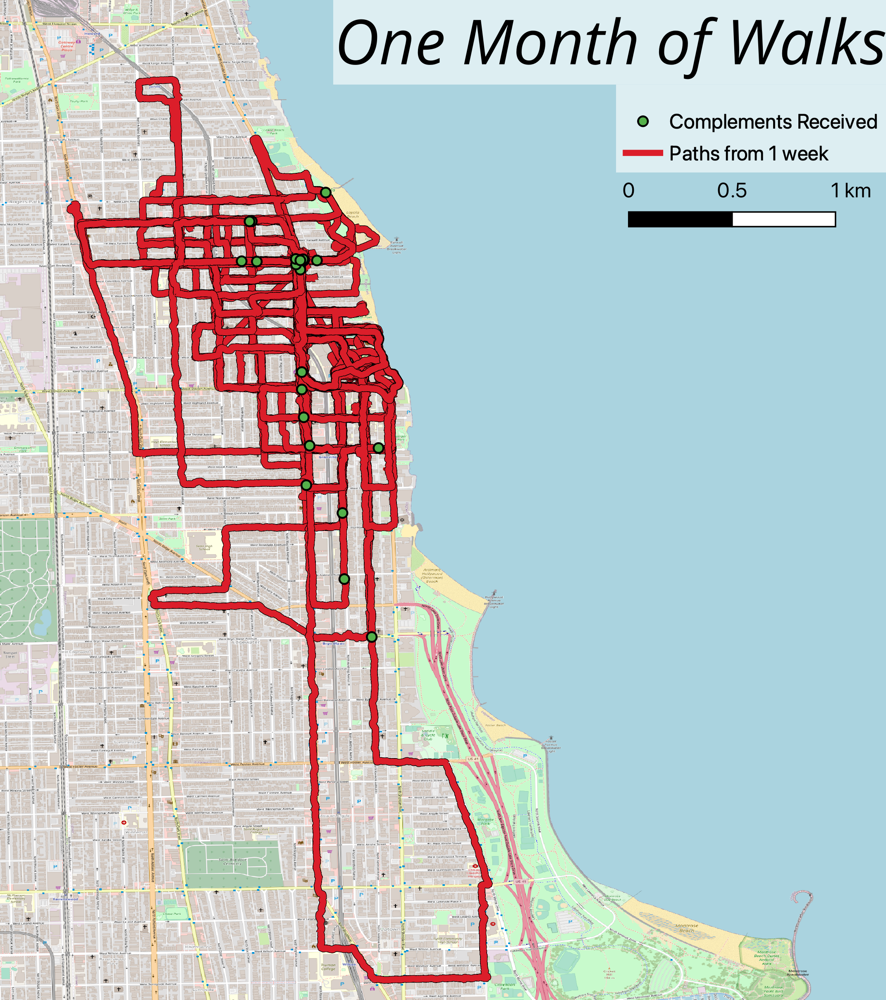

Valentine's Day Coupons for my Partner
A Custom project to recreate coupons for my partner as a Valentine's day gift. I brought in elements from other coupons and created the design from scratch

Tracking Walks and Complements
In mid-2021, I adopted my first pup: Mishka! She's, as far as we know, an Australian Shepherd/Great Pyrenees mix.
When we first adopted her, I wanted to integrate some of the skills I had learned so I tracked our walks with Strava and logged complements she received to see if there were any major patterns in how we walked and where she was getting the most attention.
When we first adopted her, I wanted to integrate some of the skills I had learned so I tracked our walks with Strava and logged complements she received to see if there were any major patterns in how we walked and where she was getting the most attention.
